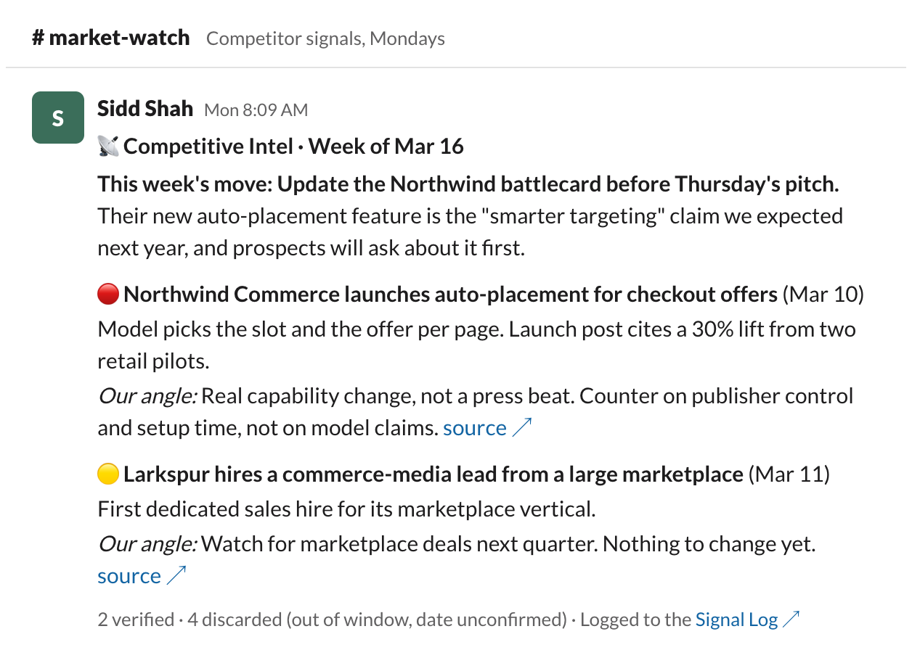
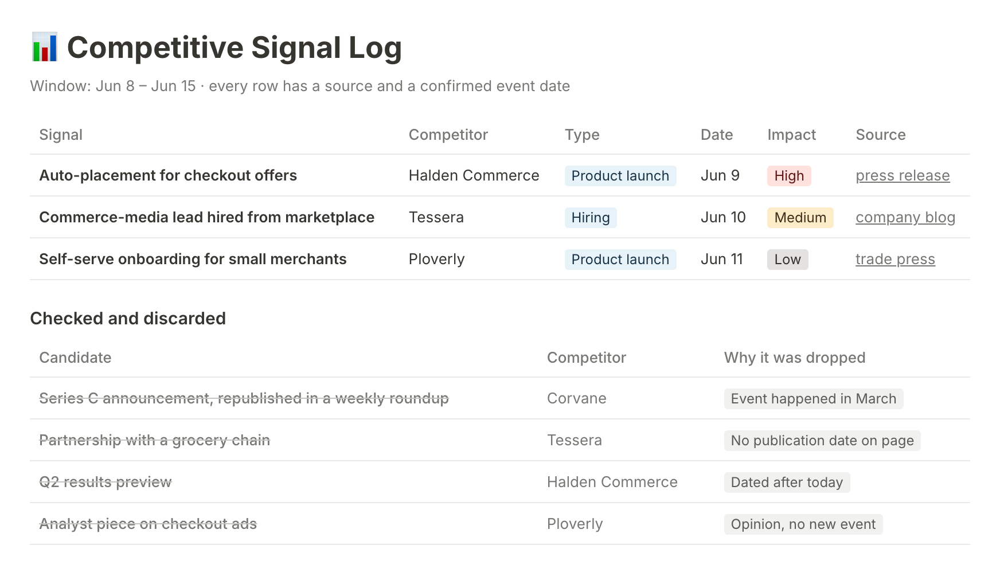

I built an agent that posted only the competitor news it could prove
My team at work needed to know what seven competitors had done each week, and that news is messy. Articles get republished, and some never say when the event happened. Hand that to a model and old news comes back sounding new.
Monday Move was a Claude Code scheduled task I wrote and ran myself. At 8am every Monday it searched the past seven days and rated each finding. High meant it could change deals or open a market; Low meant noise, logged but never posted. The Slack post led with one line: this week's move.

The hardest call was trading volume for trust. Eight items look busier than three, so I wrote the opposite rule into the prompt: three verified signals made a good run, and eight unverified ones a failed one. Every finding needed a source and a confirmed date for the event itself, because a republished article carries a fresh date. A failed check meant dropping the item, with no weaker substitute. A quiet week said "no verified signals."

Before its first search, the agent had to write out today's date and the date seven days back, then use that start date in every query. It was also barred from reporting its own background notes on a competitor as a find.
It ran about 32 times. A typical move, from July: a rival had shipped, in about four weeks, a targeting feature we expected two to three quarters out, so the line said to update that rival's battlecard now.